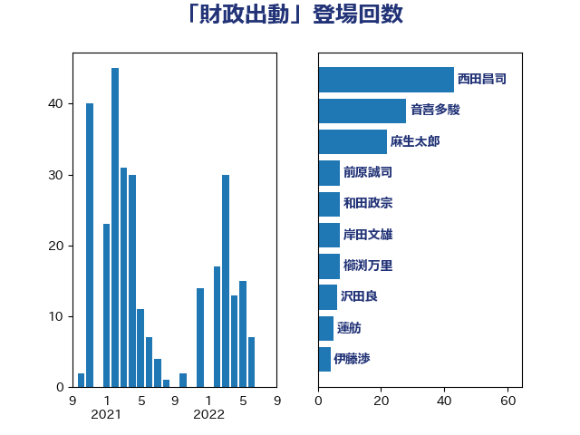

単語「財政出動」

| 西田昌司 | 自由民主党 | 43 回 |
| 音喜多駿 | 日本維新の会 | 28 回 |
| 麻生太郎 | 自由民主党 | 22 回 |
| 前原誠司 | 国民民主党 | 7 回 |
| 和田政宗 | 自由民主党 | 7 回 |
| 岸田文雄 | 自由民主党 | 7 回 |
| 櫛渕万里 | れいわ新選組 | 7 回 |
| 沢田良 | 日本維新の会 | 6 回 |
| 蓮舫 | 立憲民主党 | 5 回 |
| 伊藤渉 | 公明党 | 4 回 |
| 杉久武 | 公明党 | 4 回 |
| 海江田万里 | 立憲民主党 | 4 回 |
| 田村まみ | 国民民主党 | 4 回 |
| 菅義偉 | 自由民主党 | 4 回 |
| 牧山ひろえ | 立憲民主党 | 3 回 |
| 萩生田光一 | 自由民主党 | 3 回 |
| 高村正大 | 自由民主党 | 3 回 |
| 山本博司 | 公明党 | 2 回 |
| 山田賢司 | 自由民主党 | 2 回 |
| 森屋宏 | 自由民主党 | 2 回 |
| 浅野哲 | 国民民主党 | 2 回 |
| 玉木雄一郎 | 国民民主党 | 2 回 |
| 西村康稔 | 自由民主党 | 2 回 |
| 越智隆雄 | 自由民主党 | 2 回 |
| 足立康史 | 日本維新の会 | 2 回 |
| 里見隆治 | 公明党 | 2 回 |
| 野田佳彦 | 立憲民主党 | 2 回 |
| 高市早苗 | 自由民主党 | 2 回 |
| 上田清司 | 国民民主党 | 1 回 |
| 世耕弘成 | 自由民主党 | 1 回 |
| 中谷一馬 | 立憲民主党 | 1 回 |
| 井林辰憲 | 自由民主党 | 1 回 |
| 今枝宗一郎 | 自由民主党 | 1 回 |
| 住吉寛紀 | 日本維新の会 | 1 回 |
| 加藤鮎子 | 自由民主党 | 1 回 |
| 大島敦 | 立憲民主党 | 1 回 |
| 太田房江 | 自由民主党 | 1 回 |
| 宮本岳志 | 日本共産党 | 1 回 |
| 小西洋之 | 立憲民主党 | 1 回 |
| 山際大志郎 | 自由民主党 | 1 回 |
| 岡本三成 | 公明党 | 1 回 |
| 岸真紀子 | 立憲民主党 | 1 回 |
| 打越さく良 | 立憲民主党 | 1 回 |
| 斉藤鉄夫 | 公明党 | 1 回 |
| 梅村みずほ | 日本維新の会 | 1 回 |
| 横山信一 | 公明党 | 1 回 |
| 武田良太 | 自由民主党 | 1 回 |
| 江島潔 | 自由民主党 | 1 回 |
| 江田憲司 | 立憲民主党 | 1 回 |
| 津島淳 | 自由民主党 | 1 回 |
| 浜口誠 | 国民民主党 | 1 回 |
| 片山さつき | 自由民主党 | 1 回 |
| 田村貴昭 | 日本共産党 | 1 回 |
| 矢倉克夫 | 公明党 | 1 回 |
| 石井章 | 日本維新の会 | 1 回 |
| 石川博崇 | 公明党 | 1 回 |
| 舞立昇治 | 自由民主党 | 1 回 |
| 舟山康江 | 国民民主党 | 1 回 |
| 若松謙維 | 公明党 | 1 回 |
| 若林健太 | 自由民主党 | 1 回 |
| 落合貴之 | 立憲民主党 | 1 回 |
| 藤田文武 | 日本維新の会 | 1 回 |
| 野村哲郎 | 自由民主党 | 1 回 |
| 鈴木俊一 | 自由民主党 | 1 回 |
| 阿達雅志 | 自由民主党 | 1 回 |
| 階猛 | 立憲民主党 | 1 回 |
| 齋藤健 | 自由民主党 | 1 回 |